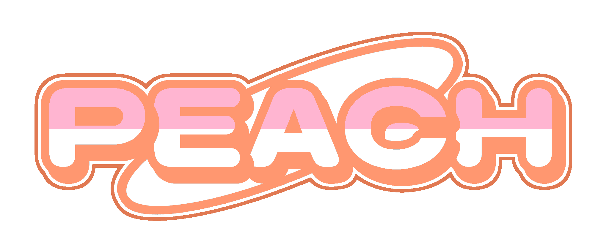

My Design Projects
Project 1: Logo Design Concept

This project involved creating logo. I chose to use my nickname "Peach" given to me by relatives. It was heavily inspired by early 2000's video game logo's to have that nostalgic element.
Project 2: "Wild Home" Concept

This project involved using stock images to create a 'wild home'. I used the 'Frutiger Aero' aesthetic as one could say that the aesthetic is 'wild'.